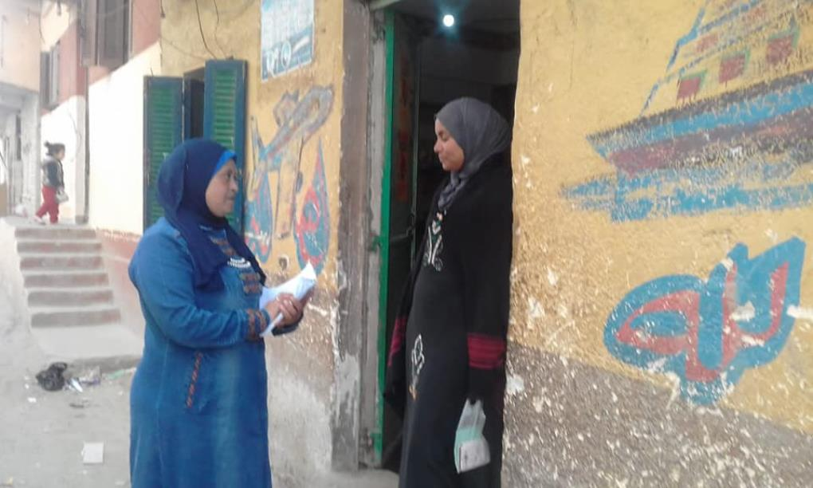

تعد الحمله وسيله هامه من وسائل مناهضه العنف ضد المرأه وهى من الحملات التابعه لوزاره التضامن الاجتماعى وهى مثال فعال لجهود الدوله في الحد من كارثه العنف ضد المرأه بمختلف أشكاله وتعتبر زياره منزليه تتمثل في الانتقال من باب لباب وهى احد الطرق الفعاله للأتصال بالنساء للتوعيه بمختلف الموضوعات وخاصه لوقايتها من تعرضها لاى شكل من أشكال التعنيف سواء الجسدى او النفسى، والتي يتم تنفيذها عن طريق مديريه الامن التابعه لكل محافظه وعن طريق الوحدات المسئوله بمختلف نشاطتها وتتم أيضا عن طريق عده أشخاص متطوعين ورائدات اجتماعيات للمساعده في تحقيق هدف الحمله ويتمثل في نشر التوعيه بين النساء والفتيات بمختلف الاعمار سواء عن تعرضهم للعنف او اضافه معلومات للاستفاده منها .ويتم القيام بها من فتره لاخرى في مختلف الاماكن لتى يصعب فيها الاجتماع بعدد كبير من السيدات للتناقش حول الموضوع بأريحيه لتوصيل المعلومه بشكل ايسر
نشاط الحملة
ولتغطيه او زياره اكبر قدر من البيوت يتم منح كل رائده خمسة زيارات في اليوم الواحد بمعدل 100 زياره في الشهر والوقت المحدد لكل زياره من 10 دقائق الى 15 دقيقه وذلك توفيرا للوقت والجهود لتكمله الزيارات وحملات طرق الأبواب غير مقتصره فقط على مناهضه العنف بل هناك عده حملات مطروحه مثل (النظافه الشخصيه للبنات ،وحمله للترببه الايجابيه وزواج الأطفال وخاصه في الريف والقرى ويتم الوصول للنساء عن طريق الندوات او حملات طرق الأبواب وأصبحت تشمل المدارس والقيام بندوات لتوعيه الفتيات بخطوره عمليه الختان وتعرضهم للزواج في سن غير مناسب ،لوجود أفكار خاطئه لدى الأمهات والمحاوله في ازاله حاله الخوف لدى كل فتاه ومساعدتها في التحدث عن حقوقها ولرفضها لاى وسيله مضره لها لمجرد انها فكره راسخه في الاذهان منذ زمن ، والتوضيح من خلال المحاضرات او الندوات للنساء ان كل شيء خارج عن أراده المراه يعد شكل من اشكال العنف وليس فقط مقتصرا على الختان او زواج القاصرات وانه ليس هناك وجود سبب للعنف او منع الطفله او المراه من رفض وضع غير مناسب لها بشكل بسيط لاستيعابه من مختلف الاعمار لاكتشاف موافقه او ترحيب بعض السيدات بتلك الأوضاع ويعود السبب لمعايشتها في نفس الأوضاع ولكن مع عدم وجود القدر الكافى من التوعيه واثر ذذلك تاثيرا سلبيا على رايهم الشخصى حول الموضوع
وبالتحدث مع أحد المتطوعين بالحمله أوضحت ان كثير من النساء رحبوا بالحمله والتناقش حول الموضوعات التي تهم المرأة، وقد اكدت الندوات الزيارات على التنويه حول وجود عده ارقام للطوارئ للمساعده ومنها (16000 لحمايه الطفل ،15115 لتزويد المراه بالمشوره والدعم النفسى والقانونى عند مواجهه اى شكل من اشكال العنف .
المصادر
- متطوعين في حملة طرق الابواب
- مصدر الصور من موقع المجلس القومي للمرأة